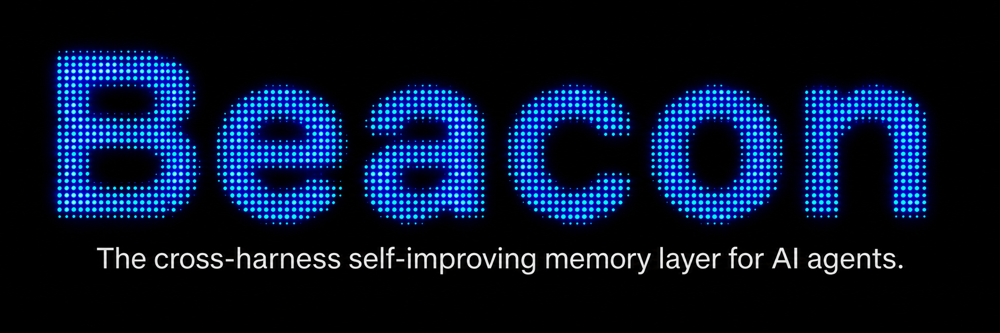

The Rediscovery Tax
A problem solved by one agent should not have to be learned from scratch by the next one. Closing that gap takes more than storage.
Ibrahim AbuAlhaol, PhD, P.Eng., SMIEEE
AI Technical Lead
Somewhere in your company this week, an agent worked out that the integration tests hang unless they run one at a time. It fixed the command, finished the job, and the session closed. The lesson went with it. Tomorrow another agent will spend the same twenty minutes learning the same thing.
That is a tax, and almost nobody has it on a line item.
Knowledge dies in three places
The loss happens at three boundaries, and they are not the same boundary.
- The session. An agent's working notes are thrown away when the task ends, and everything it worked out along the way goes with them.
- The agent. Two agents running on the same repository at the same moment cannot see each other's findings.
- The harness, meaning the loop that hands a model its tools and decides when it is done. A lesson learned inside one vendor's agent is saved, if at all, in that vendor's format, and read only by that vendor's tools.
These multiply. The cost is not one rediscovery. It is one per agent, per harness, every time the fact is needed again.
Documentation records what people decided. Agent memory has to hold what agents found out, which is exactly the set of things nobody thought was worth writing down.
A bigger context window does not help
The reflex answer is a longer context window. It does not apply. Context is what a model holds during one task. Memory is what survives after the task ends. Making the first bigger does nothing for the second, because the agent did not forget halfway through. The run finished.
Benchmarks have already split the two. Du's 2026 survey of agent memory describes the move away from static recall tests toward multi-session tests, where memory and decisions interleave, and reports that current systems still fail them. A longer window does not reach that far.
Watch what agents do, do not ask them to write it up
Ask agents to record what they learned and you get compliance theatre. The summary gets written to satisfy the instruction, at the moment the model has the least context left and the weakest sense of what mattered. The reliable path is to watch the run and keep what actually happened.
Agent Beacon, an MIT-licensed project from Asymptote Labs, works this way. It collects from wherever agents already run, using OpenTelemetry traces, hooks, polling, editor plugins or browser extensions depending on the tool, then puts it all in one format. It keeps what the agent did rather than the agent's account of it: prompts, tool calls, shell commands, file changes, approvals, token use. The default destination is a plain local file, readable without the product that wrote it.

Capture is the easy half. A raw recording holds dead ends and confident wrong turns next to the useful discovery, and promoting all of it teaches the next agent the mistakes just as firmly. Beacon puts a human review step between what was captured and what an agent can retrieve, then serves the approved material back through MCP and Agent Skills, interfaces most harnesses already speak. Nothing inside the agent has to change to read it.
Save the lesson, not the transcript
The obvious build is to store the recording and let the next agent search for the closest match. The research says that is the wrong shape.
Hu, Long and Wang tested exactly this on sequential tasks across two agent benchmarks. Short, abstracted procedures transferred reliably. Detailed recordings did not.
They also found the damage is not spread evenly. When a retrieved memory misleads an agent, it does so mostly on the hard tasks, which is where the help was needed. An easy task shrugs off a bad hint. A hard one follows it.
A separate group put a number on the upside. Skills distilled from traces across several models scored 73.1% when used on a model they had not come from, beating every version drawn from a single source. Narrow experience produced skills that only worked where they were born.
That is the argument for capturing across harnesses rather than inside one. Record a single agent and you learn that agent's habits. Record several and you get something that survives the move.
The problem moves, it does not leave
The same team found something more awkward, and it is worth sitting with. A memory layer looks like it escapes the old tradeoff between keeping what you know and taking in what is new. It does not.
Their conclusion is that the difficulty comes back one level up. The context window is finite, so old and new memories compete for room at the moment of retrieval. The hard part moves from what gets written down to what gets surfaced.
So a memory layer is not a database you fill and forget. Every item you promote competes for room against every other item you promoted. Volume is a cost, not an asset, which is the opposite of the instinct most teams bring from logging.
What this does not fix
It helps to know the edges. Beacon keeps knowledge inside your own environment, with optional forwarding to your logging or storage systems. There is no shared public index, no publishing between companies, and no signature or reputation attached to a lesson. The trust model is the review step and the boundary of your organization.
Two gaps need planning. Nothing merges duplicates, so one lesson captured from four agents becomes four entries until somebody combines them. Nothing expires either, and much of what an agent learns holds only until the next dependency upgrade. A reviewed, confident, out-of-date instruction is worse than none, because it gets retrieved with exactly the authority of a correct one.
What leaders should do
- Instrument your agent sessions before you design the memory format. You cannot tell which discoveries are worth keeping until you can see what your agents keep rediscovering, and capture is the part that works without anyone's cooperation.
- Promote short procedures, not transcripts. Distilled procedures transfer and full recordings do not, so pay for the summarising step instead of treating storage as the finish line.
- Capture across more than one agent and one model. Skills drawn from varied sources scored 73.1% on a model they had not come from, while narrow ones overfit, so recording a single tool quietly limits how far the knowledge travels.
- Give every promoted item an owner and an expiry date. Retrieval competes for a finite window, so this needs eviction as much as ingestion. A stale entry helps nobody and crowds out something true.
Related Articles
References & Extended Literature
- Asymptote Labs. Agent Beacon: a cross-harness memory layer for AI agents (MIT licence). github.com/Asymptote-Labs/agent-beacon
- Hu, Q., Long, Q., & Wang, W. (2026). When Continual Learning Moves to Memory: A Study of Experience Reuse in LLM Agents. arXiv:2604.27003. arxiv.org/abs/2604.27003
- Belikova, J., Parchiev, R., Egorov, E., Davydenko, G., Gusev, G., Savchenko, A., & Makarenko, M. (2026). Managing Procedural Memory in LLM Agents: Control, Adaptation, and Evaluation. arXiv:2606.23127. arxiv.org/abs/2606.23127
- Du, P. (2026). Memory for Autonomous LLM Agents: Mechanisms, Evaluation, and Emerging Frontiers. arXiv:2603.07670. Survey of the write, manage and read formalization and the move to multi-session agentic benchmarks. arxiv.org/abs/2603.07670
- Model Context Protocol specification, the retrieval interface most agent harnesses already implement. modelcontextprotocol.io
- OpenTelemetry specification, the trace and event model Beacon normalizes captured agent activity into. opentelemetry.io/docs/specs/otel